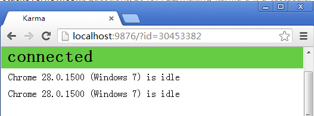
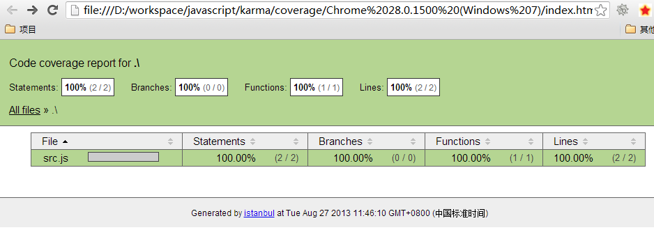
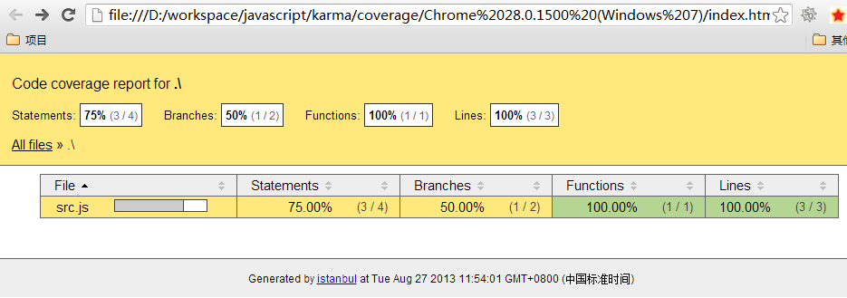

原文地址：http://blog.fens.me/nodejs-karma-jasmine/
{kind=link}
前言
在Java领域，Apache, Spring, JBoss 三大社区的开源库，包罗万象，但每个库都在其领域中都鹤立鸡群。而Nodejs中各种各样的开源库，却让人眼花缭乱，不知从何下手。
Nodejs领域: Jasmine做单元测试 ， Karma自动化完成单元测试 ， Grunt启动Karma统一项目管理 ， Yeoman最后封装成一个项目原型模板 ，npm做nodejs的包依赖管理， bower做javascript的包依赖管理 。Java领域：JUnit做单元测试, Maven自动化单元测试，统一项目管理，构建项目原型模板，包依赖管理。
Nodejs让组合变得更丰富，却又在加重我们的学习门槛。我还说不清楚，也看不透！
上面写的有点远了，回到文章的主题，Jasmine+Karma自动化单元测试。
目录
- Karma的介绍
- Karma的安装
- Karma + Jasmine配置
- 自动化单元测试
- Karma和istanbul代码覆盖率
- Karma第一次启动时出现的问题
1. Karma的介绍
Karma是Testacular的新名字，在2012年google开源了Testacular，2013年Testacular改名为Karma。Karma是一个让人感到非常神秘的名字，表示佛教中的缘分，因果报应，比Cassandra这种名字更让人猜不透！
Karma是一个基于Node.js的JavaScript测试执行过程管理工具（Test Runner）。该工具可用于测试所有主流Web浏览器，也可集成到CI（Continuous integration）工具，也可和其他代码编辑器一起使用。这个测试工具的一个强大特性就是，它可以监控(Watch)文件的变化，然后自行执行，通过console.log显示测试结果。
Jasmine是单元测试框架，本单将介绍用Karma让Jasmine测试自动化完成。Jasmine的介绍，请参考文章： jasmine行为驱动,测试先行
istanbul是一个单元测试代码覆盖率检查工具，可以很直观地告诉我们，单元测试对代码的控制程度。
2. Karma的安装
系统环境:
win7 64bit, node v0.10.5, npm 1.2.19安装Karma
~ D:\workspace\javascript>mkdir karma
~ D:\workspace\javascript>cd karma
~ D:\workspace\javascript\karma>npm install -g karma
# 测试是否安装成功
~ D:\workspace\javascript\karma>karma start
INFO [karma]: Karma v0.10.2 server started at http://localhost:9876/
INFO [Chrome 28.0.1500 (Windows 7)]: Connected on socket nIlM1yUy6ELMp5ZTN9Ek
从浏览器看到karam界面。
{kind=link}
下面我们要开始配置karam。
3. Karma + Jasmine配置
初始化karma配置文件karma.conf.js
~ D:\workspace\javascript\karma>karma init
Which testing framework do you want to use ?
Press tab to list possible options. Enter to move to the next question.
> jasmine
Do you want to use Require.js ?
This will add Require.js plugin.
Press tab to list possible options. Enter to move to the next question.
> no
Do you want to capture a browser automatically ?
Press tab to list possible options. Enter empty string to move to the next question.
> Chrome
>
What is the location of your source and test files ?
You can use glob patterns, eg. "js/*.js" or "test/**/*Spec.js".
Enter empty string to move to the next question.
>
Should any of the files included by the previous patterns be excluded ?
You can use glob patterns, eg. "**/*.swp".
Enter empty string to move to the next question.
>
Do you want Karma to watch all the files and run the tests on change ?
Press tab to list possible options.
> yes
Config file generated at "D:\workspace\javascript\karma\karma.conf.js".
安装集成包karma-jasmine
~ D:\workspace\javascript\karma>npm install karma-jasmine4. 自动化单元测试
3步准备工作：
- 1. 创建源文件：用于实现某种业务逻辑的文件，就是我们平时写的js脚本
- 2. 创建测试文件：符合jasmineAPI的测试js脚本
- 3. 修改karma.conf.js配置文件
1). 创建源文件：用于实现某种业务逻辑的文件，就是我们平时写的js脚本
有一个需求，要实现单词倒写的功能。如：”ABCD” ==> “DCBA”
~ vi src.js
function reverse(name){
return name.split("").reverse().join("");
}
2). 创建测试文件：符合jasmineAPI的测试js脚本
describe("A suite of basic functions", function() {
it("reverse word",function(){
expect("DCBA").toEqual(reverse("ABCD"));
});
});
3). 修改karma.conf.js配置文件
我们这里需要修改：files和exclude变量
module.exports = function (config) {
config.set({
basePath: '',
frameworks: ['jasmine'],
files: ['*.js'],
exclude: ['karma.conf.js'],
reporters: ['progress'],
port: 9876,
colors: true,
logLevel: config.LOG_INFO,
autoWatch: true,
browsers: ['Chrome'],
captureTimeout: 60000,
singleRun: false
});
};
启动karma
单元测试全自动执行
~ D:\workspace\javascript\karma>karma start karma.conf.js
INFO [karma]: Karma v0.10.2 server started at http://localhost:9876/
INFO [launcher]: Starting browser Chrome
WARN [launcher]: The path should not be quoted.
Normalized the path to C:\Program Files (x86)\Google\Chrome\Application\chrome.exe
INFO [Chrome 28.0.1500 (Windows 7)]: Connected on socket bVGffDWpc1c7QNdYye_6
INFO [Chrome 28.0.1500 (Windows 7)]: Connected on socket DtTdVbd4ZsgnMQrgye_7
Chrome 28.0.1500 (Windows 7): Executed 1 of 1 SUCCESS (3.473 secs / 0.431 secs)
Chrome 28.0.1500 (Windows 7): Executed 1 of 1 SUCCESS (0.068 secs / 0.021 secs)
TOTAL: 2 SUCCESS
浏览器会自动打开

{kind=link}
我们修改test.js
~ vi test.js
describe("A suite of basic functions", function() {
it("reverse word",function(){
expect("DCBA").toEqual(reverse("ABCD"));
expect("Conan").toEqual(reverse("nano"));
});
});
由于karma.conf.js配置文件中autoWatch: true, 所以test.js文件保存后，会自动执行单元测试。
执行日志如下：提示我们单元测试出错了。
INFO [watcher]: Changed file "D:/workspace/javascript/karma/test.js".
Chrome 28.0.1500 (Windows 7) A suite of basic functions reverse word FAILED
Expected 'Conan' to equal 'onan'.
Error: Expected 'Conan' to equal 'onan'.
at null. (D:/workspace/javascript/karma/test.js:4:25)
Chrome 28.0.1500 (Windows 7): Executed 1 of 1 (1 FAILED) ERROR (0.3 secs / 0.006 secs)
5. Karma和istanbul代码覆盖率
增加代码覆盖率检查和报告，增加istanbul依赖
~ D:\workspace\javascript\karma>npm install karma-coverage
修改karma.conf.js配置文件
~ vi karma.conf.js
reporters: ['progress','coverage'],
preprocessors : {'src.js': 'coverage'},
coverageReporter: {
type : 'html',
dir : 'coverage/'
}
启动karma start，在工程目录下面找到index.html文件，coverage/chrome/index.html
打开后，我们看到代码测试覆盖绿报告

{kind=link}
覆盖率是100%，说明我们完整了测试了src.js的功能。
接下来，我们修改src.js，增加一个if分支
function reverse(name){
if(name=='AAA') return "BBB";
return name.split("").reverse().join("");
}
再看覆盖率报告，

{kind=link}
Statements：75%覆盖，Branches：50%覆盖。
为了产品的质量我们要尽量达到更多的覆盖率，一般对于JAVA项目来说，能达到80%就是相当高的标准了。对于Javascript的代码测试及覆盖率研究，我还要做更多的验证。
6. Karma第一次启动时出现的问题
CHROME_BIN的环境变量问题
~ D:\workspace\javascript\karma>karma start karma.conf.js
INFO [karma]: Karma v0.10.2 server started at http://localhost:9876/
INFO [launcher]: Starting browser Chrome
ERROR [launcher]: Cannot start Chrome
Can not find the binary C:\Users\Administrator\AppData\Local\Google\Chrome\Application\chrome.exe
Please set env variable CHROME_BIN
设置方法：找到系统中chrome的安装位置，找到chrome.exe文件
~ D:\workspace\javascript\karma>set CHROME_BIN="C:\Program Files (x86)\Google\Chrome\Application\chrome.exe"